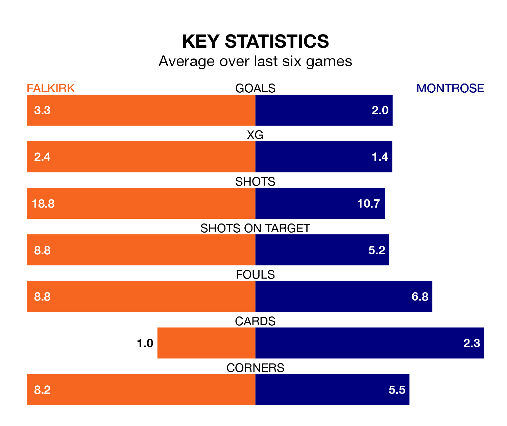

Two of League One's top sides face each other at the Falkirk Community Stadium in Tuesday's late kick-off, when table-topping Falkirk host fourth-placed Montrose.
Falkirk have picked up 18 wins and five draws from 23 games so far this season, and sit 23 points above the visitors going into the 7.45pm match.
The Gable Endies, meanwhile, have won 10 and drawn six of 24, picking up 36 points.
With 59 goals in 23 games so far this season, Falkirk are the league's highest scorers with 2.6 goals per game. And they are conceding fewer than average, letting in 15 goals at a rate of 0.7 per game.
Montrose, meanwhile, are average scorers, with 1.6 goals per game. They have conceded 1.4 goals per game.
With Sam Long between the sticks, the Bairns can rely on one of the league's safest pair of hands. He has kept eight clean sheets in his 13 appearances this season, and no 'keeper has prevented the opposition scoring more often in League One.
In the Gable Endies's net, Cameron Gill has five clean sheets in 24 games. He has conceded a goal every 65 minutes, more than twice as often as the 146 minutes between goals for Long.
The home side are in fantastic form in League One, with five wins and a draw from their last six games.
With three wins and two draws over that period, the visitors' form is worse – they have taken 11 points from 18, compared to Falkirk's 16.
In the last 10 years, Falkirk and Montrose have played each other on 18 occasions. Falkirk won nine of them, Montrose five, and they drew four times.
On average, the Bairns scored 1.4 goals and the Gable Endies 1.2 in those matches.
Their last meeting was on November 28, when they played out a 0-0 draw.
Falkirk's last match was on Saturday, a 3-2 win against Hamilton Academical, with Callumn Morrison, Calvin Miller and Ross MacIver getting the goals for the Bairns.
Montrose beat Kelty Hearts 4-2 last time out, also on Saturday, with Andrew Steeves, Blair Lyons, Graham Webster and Kane Hester on the scoresheet.
Tuesday's match will be refereed by Iain Snedden, who has taken charge of six League One games so far this season, issuing one red card and booking 24 players. He has awarded three penalties.
The last Falkirk game Snedden refereed was a 2-2 away draw with Edinburgh City on January 13. His last Montrose match was their 3-2 win away at Queen of the South on September 2.
Updated: 12:18 (UTC), 19/02/24